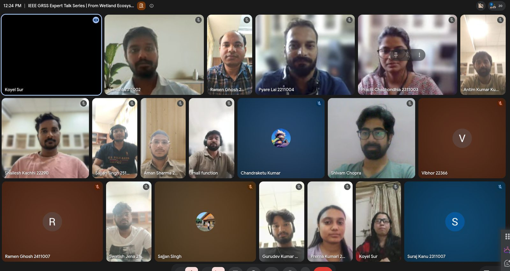

Next talk
November 2026 · Talk 2
Speaker and date to be announced
Follow the chapter LinkedIn page or join the WhatsApp group through the Join page for the announcement. Want to suggest a speaker? Write to grss@iiserb.ac.in.
Talk 1: From Wetland Ecosystem Services to Disaster Resilience
An Integrated Remote Sensing, GIS and AI Framework for Risk Reduction

| Speaker | Dr. Koyel Sur, Scientist, Punjab Remote Sensing Centre (PRSC) |
|---|---|
| Date | Saturday, 24 October 2026, 11:00 AM to about 12:30 PM IST |
| Mode | Online, Google Meet |
| Participants | 29 |
| Chaired by | Pyare Lal, Chair; speaker introduced by Prachi Chachondhia, Secretary |
About the speaker
Dr. Koyel Sur is a Scientist at the Punjab Remote Sensing Centre, specialising in geospatial science, remote sensing and GIS. Her work integrates Earth observation, machine learning and AI for environmental monitoring, flood mapping, soil erosion modelling, land-use dynamics and climate-risk assessment. She has authored more than 50 international journal papers and received the National Geospatial Award from IIT Bombay.
About the talk
Wetlands act as natural buffers against floods and climate extremes. They regulate hydrology, store excess water, reduce erosion and support biodiversity and food security. The talk explored how remote sensing, GIS and AI can assess wetland ecosystem services, identify vulnerable systems and support evidence-based disaster risk reduction, conservation and restoration, through three steps: observe wetland change with Earth observation, understand it by combining geospatial data, GIS and AI-driven assessment, and build resilience through risk reduction, protection and ecological restoration.
What was covered
- Wetland ecosystem services, and the growing disaster risks from extreme rainfall, encroachment, urban expansion and drainage alteration.
- Satellite remote sensing and GIS for mapping wetland extent, hydrological dynamics, vegetation and ecosystem health, water quality, climate change effects, disaster risk reduction and habitat mapping.
- The Harike wetland in Punjab, a Ramsar site at the confluence of the Beas and Satluj, its catchment drainage and canal network, vegetation diversity mapping from field spectral measurements and machine-learning classification, and about 30 years of surface-water mapping.
- An extended question-and-answer session with fourteen questions on carbon credits, wetland classification, LiDAR and elevation data, flood vulnerability, restoration, digital twins, groundwater interaction, open data sources such as Sentinel-2, Google Earth Engine and Bhuvan, and monitoring frequency.

Relevant to SDGs 2, 6, 11, 13 and 15. Announcement on LinkedIn
Speak at IISER Bhopal
The series welcomes researchers from universities, ISRO centres, state remote sensing centres, industry and start-ups. Talks are one hour online with time for questions. Write to grss@iiserb.ac.in with a title and a short abstract.